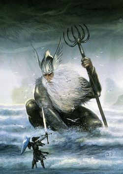

- 
- Name: Ulmo
- Born: Before the Creation of Arda
- Died: Immortal
- Gender: Male
- Race: Ainur(Valar)
- Spouse: None
- Titles: Queen of Arda, Queen of the Stars, Queen of the Valar
Ulmo (Quenya; IPA: [ˈulmo] - "Pourer" or "Rainer") - also known as Ulubôz or Ullubôz - was an Ainu,
one of the Aratar, and the Vala responsible for the control over the oceans of Arda. A
lover of water, Ulmo was one of the Arda's chief architects and was always in a close
friendship with Manwë. He always distrusted Melkor, and the Dark Lord feared the Sea
almost as much as he feared Varda because the sea cannot be tamed. Ulmo had no dwelling
in Valinor or any permanent dwelling on land, as he preferred the deeps of the seas and the rivers.
His palace, on the bottom of Vaiya, was called Ulmonan.
Biography:
Ulmo seldom came to the Councils of Máhanaxar, and only when in great need. He preferred to stay in Arda, not by walking on the land, as his form would fill man or elf with great dread. All waters were under his government: bays, rivers and even the waters under the earth. Where the power of Morgoth was strong, however, Ulmo's own power would be sapped from waters near to Morgoth's corruption. It is through the rivers that he kept in touch with Arda, and thus knew more of the goings on with the Children of Ilúvatar than even Manwë, for in that way he lived in the very veins of the world. His visible form caused fear in mortals and even the Elves. In the Fall of Gondolin he was described as having a tall crown like silver, and his hair was like shimmering sea foam. He wore a grey cloak which appeared as a mist veiling a coat of mail which glittered like fish scales flickering green. And the horns he blew were called the Ulumúri. Ulmo always loved the Eldar and the Edain, even when the Valar forsook Middle-earth. He opposed Oromë's plan to bring the elves to Aman, but helped those that were willing to reach it. He uprooted a large island which was later known as Tol Eressëa and used it to ferry them across the Belegaer to the Blessed Realm. Afterwards, he anchored it in the Bay of Eldamar, which he did because he knew the minds of the Teleri. Ulmo was the Vala most responsible for the fall of Morgoth, by urging Turgon to build Gondolin and Finrod to build Nargothrond (FA 50). He appeared before Tuor and urged him to go to Gondolin as a messenger to Turgon. When he got there, he eventually married Turgon's daughter Idril and fathered Eärendil. Ulmo saved Eärendil's wife Elwing from the sack of the Havens of Sirion, allowing her to take a Silmaril to her husband, which allowed him to gain admittance to Valinor and plead for aid. Ulmo also defended them in the council from the potential wrath of Mandos.